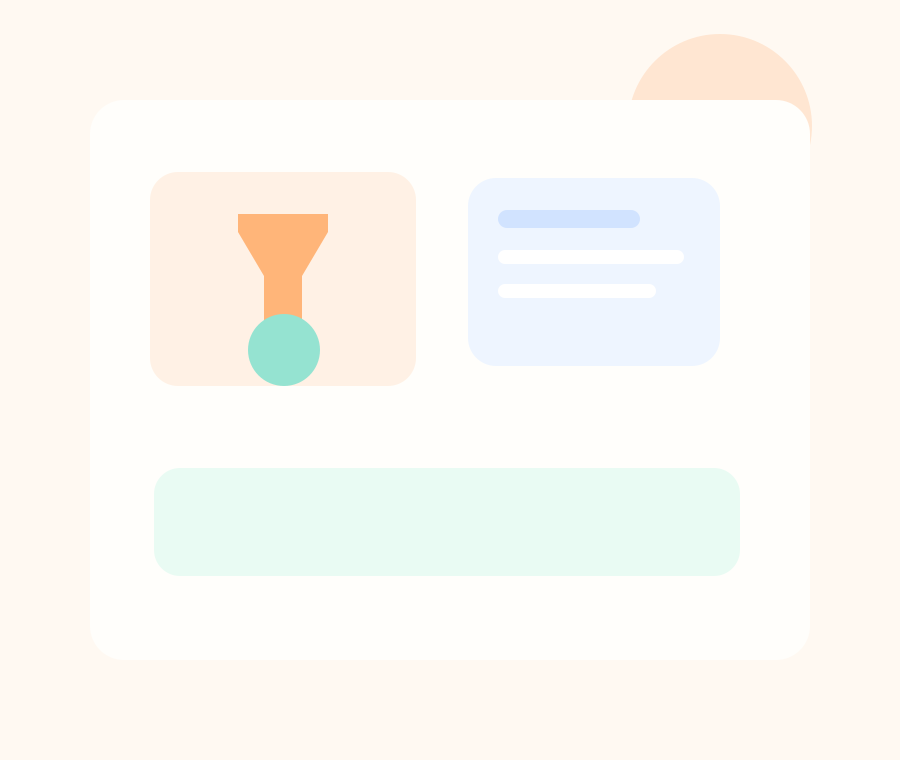
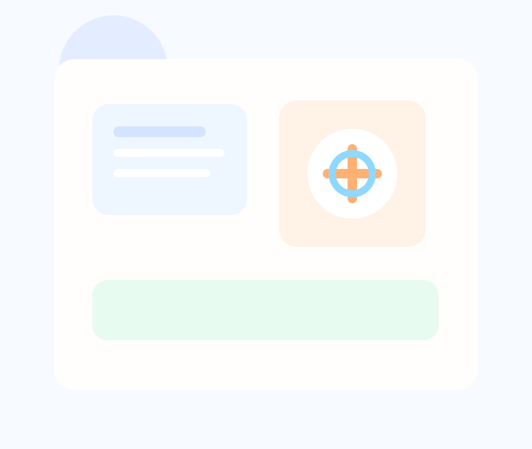

Fragen stellen, Experimente planen und Phänomene wirklich durchdringen.
Dieser Projektkurs richtet den Blick auf naturwissenschaftliches Arbeiten in seiner praktischen Form. Ihr forscht an echten Fragestellungen, wertet Ergebnisse aus und entwickelt ein Gespür dafür, wie Erkenntnisse entstehen.
Im Projektkurs Naturwissenschaften arbeitet ihr forschend, systematisch und neugierig. Ihr entwickelt Fragestellungen, plant Untersuchungen, beobachtet genau und wertet Daten so aus, dass daraus belastbare Ergebnisse entstehen. Dabei können Themen aus Umwelt, Gesundheit, Nachhaltigkeit, Stoffen, Energie oder Alltag im Mittelpunkt stehen. Wichtig ist nicht nur das Ergebnis, sondern auch der Weg dorthin: Hypothesen bilden, sauber dokumentieren, kritisch prüfen und verständlich präsentieren.
Der Kurs ist ideal für alle, die gern experimentieren, Zusammenhänge erkennen und wissenschaftliches Arbeiten nicht nur aus dem Lehrbuch kennen wollen. Mögliche Produkte reichen von Versuchsreihen und Ausstellungen bis hin zu Forschungsberichten oder Präsentationen für ein größeres Publikum.

